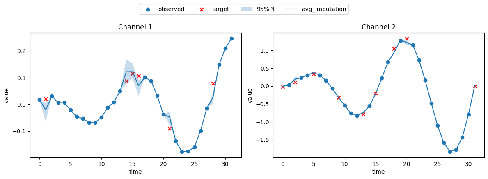

Time Series Imputation
In this tutorial, we will demonstrate how to impute missing values with deep generative model.
Problem setting
Given \(\mathbf{x}_{\text{obs}} \in \mathbb{R}^{T \times D}\), which contains NaN values, we are interested in the conditional distribution, i.e. \(p(\mathbf{x}_{\text{target}} \mid \mathbf{x}_{\text{obs}})\). From this distribution, we can draw possible full time series \(\hat{\mathbf{x}}_{\text{target}} \in \mathbb{R}^{T \times D}\).
Implementation
1. import modules
[1]:
import torch
from gents.dataset import Spiral2D
from gents.model import VanillaDDPM
from gents.evaluation import imputation_visual, crps
from lightning import Trainer
/home/wcx/anaconda3/envs/gents/lib/python3.10/site-packages/tqdm/auto.py:21: TqdmWarning: IProgress not found. Please update jupyter and ipywidgets. See https://ipywidgets.readthedocs.io/en/stable/user_install.html
from .autonotebook import tqdm as notebook_tqdm
CUDA extension for cauchy multiplication not found. Install by going to extensions/cauchy/ and running `python setup.py install`. This should speed up end-to-end training by 10-50%
Falling back on slow Cauchy kernel. Install at least one of pykeops or the CUDA extension for efficiency.
Falling back on slow Vandermonde kernel. Install pykeops for improved memory efficiency.
2. setup datamodule and model
Here, we set \(T=32\) for an example. To manually introduce missing values, we need to set condition='impute' and missing_rate=0.2 (for example).
In this way, for each batch, the condition batch['c'] is tensors with NaN, and the target is batch['seq'].
[2]:
dm = Spiral2D(
seq_len=32,
batch_size=64,
data_dir="../data",
missing_rate=0.2,
condition="impute",
)
model = VanillaDDPM(seq_len=dm.seq_len, seq_dim=dm.seq_dim, condition="impute", pred_x0=False)
[3]:
trainer = Trainer(max_epochs=300, devices=[0], enable_progress_bar=False)
trainer.fit(model, dm)
GPU available: True (cuda), used: True
TPU available: False, using: 0 TPU cores
HPU available: False, using: 0 HPUs
You are using a CUDA device ('NVIDIA GeForce RTX 3080 Ti') that has Tensor Cores. To properly utilize them, you should set `torch.set_float32_matmul_precision('medium' | 'high')` which will trade-off precision for performance. For more details, read https://pytorch.org/docs/stable/generated/torch.set_float32_matmul_precision.html#torch.set_float32_matmul_precision
LOCAL_RANK: 0 - CUDA_VISIBLE_DEVICES: [0,1,2,3]
| Name | Type | Params | Mode
------------------------------------------
0 | backbone | DiT | 1.2 M | train
------------------------------------------
1.2 M Trainable params
512 Non-trainable params
1.2 M Total params
4.734 Total estimated model params size (MB)
85 Modules in train mode
0 Modules in eval mode
`Trainer.fit` stopped: `max_epochs=300` reached.
[4]:
# testing
dm.setup("test")
real_data = torch.cat([batch["seq"] for batch in dm.test_dataloader()])
cond_data = torch.cat([batch["c"] for batch in dm.test_dataloader()])
gen_data = model.sample(
n_sample=10,
condition=cond_data,
)
[5]:
imputation_visual(
real_data=real_data,
gen_data=gen_data,
cond_data=cond_data,
data_mask=torch.ones_like(real_data).bool(),
# uncomment the following line to save the plot
# save_root='./predict.png'
)
